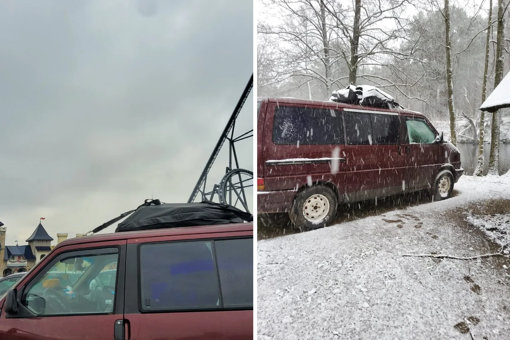

Winter at Energylandia in Poland — little sleep, lots of fun

An amusement park in winter either sounds completely crazy or like a really good idea. For me, it was both. With the red bike, we headed to Energylandia in Poland — roller coasters in front of the windshield, snow on the camper, and hardly any sleep.
Even the arrival felt special
In the first photo, the Red Man stands right in front of the huge roller coaster backdrop. This picture perfectly captures the mood: my little home on wheels in front of these massive rails. I was immediately excited and wanted to see everything at once.
In winter, such a visit takes on a very special atmosphere. Cold air, early darkness, and lights make the park different from a hot summer day. Energylandia calls its seasonal winter offering "Winter Kingdom." Which attractions and dates are currently offered is changing; that's why you should always take a look at the official website as well.
No sleep, but plenty of memories
I could now say I slept deeply and peacefully in the camper. The truth: there wasn't much sleep in it. Winter in the van is more intense. Wet clothes, cold air, and a day full of impressions don't turn a night into a wellness break. Still, I wouldn't trade the experience.
The second photo shows the red one in snowfall. This is exactly what the other side of a winter trip looks like: beautiful but challenging. You enjoy the white landscape while also thinking about warmth, dry clothes, batteries, and the next safe route.
Why it was still so much fun
Vanlife doesn't always have to be a lonely lake and sunset. Sometimes the bus is parked in front of an amusement park, you're completely exhausted and still grin all day. Energylandia was exactly such an adventure: loud, cold, exciting, and certainly not boring.
Little sleep, lots of fun — there's really nothing more to say about this trip. Just one more thing: The red one looked quite small under the roller coasters. For me, it was still the most important spot in the entire park that day.
See you soon and always have a good trip,
your Tussy 💛